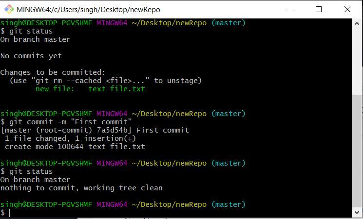

- cd - Irá mudar sua pasta atual para o diretório pai.
- ls - listar arquivos ou directórios dentro de outros directórios.
- mkdir - Criar um novo diretório.
- rm - Remove as entradas para o parâmetro Arquivo especificado de um diretório.
- cp - Copia arquivos do diretório atual para uma pasta diferente.
- mv - Mover arquivos, mas ele também pode ser usado para renomear arquivos.
- cat - Ele é usado para visualizar, criar e relacionar arquivos.
- grep - Procura por trechos de texto (strings) dentro de arquivos ou diretórios e retorna para você em quais arquivos a string foi encontrada, inclusive mostrando a linha em que isso ocorreu.
- ps - Exibir informações sobre os processos em execução no sistema operacional
- chmod - Alterar as permissões de um arquivo ou pasta.
- shutdown - Interrompe o Agente de Log do PowerExchange.
- netstat - exibe simbolicamente o conteúdo de várias estruturas de dados relacionados à rede para conexões ativas.
- ifconfig - Definir o endereço de rede de cada interface presente em um sistema.
- ping - Testa a conectividade entre dois equipamentos físicos, a partir de uma rede.
- traceroute - Ajuda a determinar problemas de rede entre a sua localização e o servidor do seu site.
- uname -Exibe todas as informações do sistema.
- rsync - Ele é amplamente utilizado para realizar backups, transferências de arquivos e espelhamento de diretórios.
- hostname - Configura ou exibe o nome do sistema host atual.
- sort - É utilizado para processar a saída gerada por outros programas.
- chown - Altera o proprietário do arquivo ou diretório especificado pelo parâmetro Arquivo ou Diretório para o usuário especificado pelo parâmetro Proprietário .
